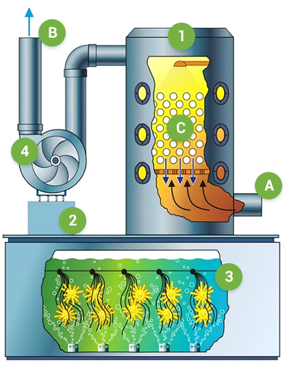

Компания
«Industrial Bio Technology»
предлагает к поставке
абсорбционно-биологические
установки (АБУ)
Эфективность АБУ
АБУ не имеют аналогов на мировом рынке газоочистного оборудования.
фенола, формальдегида
- не менее 95% при входной концентрации >20 мг/м3;
- не менее 85% при входной концентрации 10-20 мг/м3;
- не менее 80% при входной концентрации 6-10 мг/м3;
- не менее 70% при входной концентрации 4-6 мг/м3.
триэтиламина и взвешенных веществ
- 96 - 99,9%
(на выходе концентрация триэтиламина не более 20 мг/м3)
взвешенных веществ
- не менее 98%
Принцип работы АБУ
Очистка вентиляционного воздуха в АБУ основана на естественных природных процессах:
- первый заключается в том, что большинство вредных летучих органических соединений растворимы в технической воде;
- второй принцип основан на способности специально селекционированных и адаптированных природных микроорганизмов использовать в качестве источников питания растворенные в воде органические и некоторые неорганические вещества. В процессе потребления микроорганизмами этих соединений происходит их полная минерализация с образованием воды и углекислого газа.
Принципиальная схема и описание абсорбционно-биологической установки
Принципиальная схема и описание абсорбционно-биологической установки
- 1 – скруббер;
- 2 – насос;
- 3 – биореактор с микроорганизмами;
- 4 – вентилятор;
- А – вход вентвоздуха;
- В - выход вентвоздуха;
- С – абсорбционный раст
В скруббере при помощи водного абсорбента происходит улавливание вредных веществ, а в биореакторе – их нейтрализация (окисление до CO2 и H2O).
Циркуляция раствора происходит по замкнутому циклу «скруббер – биореактор», при этом сток в канализацию отсутствует. Очищенный вентвоздух выбрасывается в атмосферу.
Микроорганизмы вводятся в биореактор один раз перед началом эксплуатации в виде концентрированной биомассы. Используемые в АБУ микроорганизмы не токсичны и не патогенны, выделены из природных источников и прошли токсикологическую экспертизу.
Пожалуйста, посмотрите на нашем сайте наиболее часто встречающиеся вопросы касающиеся эксплуатации АБУ и ответы на них.
Для подготовки технико-коммерческого предложения на поставку АБУ для вашего предприятия заполните опросный лист . Вы можете направить нам запрос в произвольной форме.